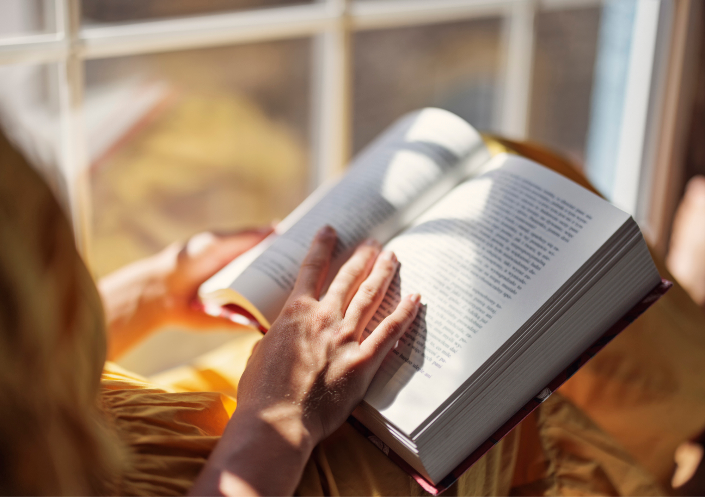
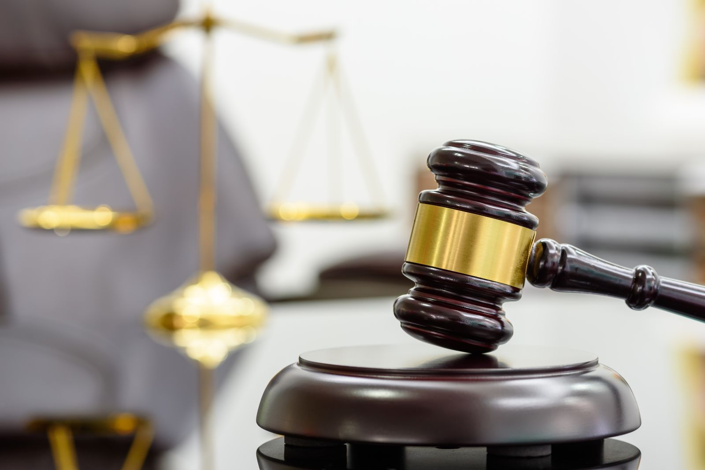

About Me & My Learning Journey

Hello! My name is Edilma Baena Beleño. I am 37 years old and I live in Cartagena. I am married and I have two children. I work and study online, focusing on logistics process coordination. I am learning English with the help of SENA classes, and I also use internet resources to practice more. My main motivation is to improve myself at work and in my personal life, always looking to grow and reach new goals.
My Hobby: Skating

I like reading, watching movies, and walking with my family. These moments help me relax and feel calm. They also make our family bond stronger, because every time together becomes a special memory.
Spending this time reminds me how important it is to be with my loved ones, to share laughs, talks, and experiences. For me, these moments give me energy and motivation. They help me keep balance between my responsibilities and the happiness of being with my family.
Travels and Dreams

We would like to travel to New York because it is a city full of history, culture, and famous places. For me, it would be a very special experience, not only to share with my family but also to practice my English in real life.
Being able to talk with people in their language and use what I have learned would be very good for me. I could also learn new words and expressions. Traveling helps us open our minds, makes family bonds stronger, and gives unforgettable memories. That is why visiting New York is one of my biggest dreams.
Critical Thinking and Media Literacy

I think it is very important to check the information we receive today, because not everything on social media or the internet is true. There are many fake news and propaganda that can confuse or manipulate us.
That is why I try not to believe the first thing I read. I check if the source is reliable and compare the information with other places. I believe we should all do the same, because sharing false news only creates more confusion.
In my opinion, the best way is to always think critically: ask, check, and reflect before accepting something as true. This way we can protect ourselves and also help other people not to believe in false information.
Crime and Punishment

YI think justice is very important because it helps us live with respect and order. When someone commits a crime, it not only hurts the victim, but also the whole society, because it creates fear and distrust.
I believe punishments must be fair and not only correct, but also teach that our actions have consequences. At the same time, I think justice should give people the chance to change and be better.
In the end, I am sure that a fair society is not only about punishment, but also about education, values, and helping each other. If everyone did their part, there would be less crime and we could live with more peace and safety.
Current Issues / News I Care About

A topic that interests me a lot is artificial intelligence. Every day we hear more about how it is changing the way we live, study, and work. I think AI has many good things, because it saves time, makes hard tasks easier, and can help in education, health, or research.
But I also think it is important to use this technology with responsibility, because AI is not perfect. Sometimes it gives wrong information or can even replace jobs that people do. That is why I believe the best way is to live with it, use its benefits, but also keep critical thinking and the value of human beings.
For me, AI is a powerful tool that, if used well, can open many opportunities. But it depends on us to use it in the right and conscious way.